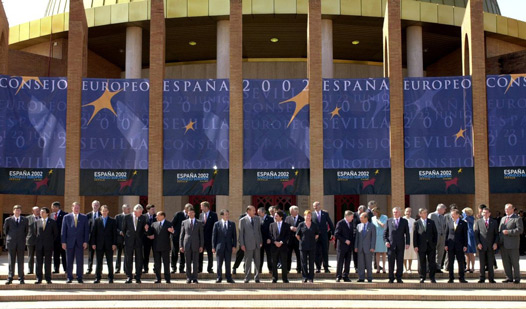

Durante casi medio siglo (1947-1989), las relaciones internacionales, la política, la economía e incluso la cultura, estuvieron marcadas por la rivalidad entre los Estados Unidos de América y la Unión de Repúblicas Socialistas Soviéticas o Unión Soviética.
-
01
La Guerra Fría
Open or CloseEste periodo se conoció como Guerra Fría e implicó una tensión política, ideológica, militar y económica entre dos potencias que, paradójicamente, habrían sido aliadas durante la Segunda Guerra Mundial.
Uno de los objetivos de la Guerra Fría fue evitar que la contraparte ampliara su influencia política e ideológica en cualquier lugar del mundo considerado geoestratégico. Por tal razón, Estados Unidos y la Unión Soviética utilizaron servicios de inteligencia y espionaje para estudiar los pasos del enemigo.
La Guerra Fría en América Latina
En América Latina, la Guerra Fría se relacionó con la formación de guerrillas en algunos países y con la "Crisis de los misiles" en 1962. Este último evento fue el descubrimiento de bases de misiles nucleares soviéticos en territorio cubano, por parte de Estados Unidos.
La Guerra Fría se desarrolló entre 1947 y 1989. No obstante, desde ese año hasta 1991 se presentaron dos acontecimientos que desembocaron en el final de la confrontación: se trató de la caída del muro de Berlín y la desintegración de la Unión de Repúblicas Socialistas Soviéticas.
Profundiza
Recuerda
El término "Guerra Fría" fue inventado por Bernard Baruch, un asesor del presidente F. D. Roosevelt, y por el periodista y editorialista Walter Lippmann.
Estados Unidos y la Unión de Repúblicas Socialistas Soviéticas nunca se enfrentaron directamente, pero sí influyeron de manera decisiva para que en diferentes territorios de la geografía mundial se desataran conflictos como las guerras de Vietnam o de Corea.
Profundiza
Al cabo de la Guerra Fría, durante los primeros cinco años de la década de 1990, muchos territorios que antes hacían parte de la Unión Soviética se independizaron y conformaron nuevos países. Esto como consecuencia de las políticas impulsadas por Mijail Gorbachov, secretario del Partido Comunista, que posibilitaron que la potencia perdiera poder sobre parte del inmenso territorio que la integraba. Tres de esos casos fueron la República Checa, Eslovaquia y los Balcanes.
Ronald Reagan, presidente de Estados Unidos, y Mijail Gorbachov, secretario del Partido Comunista Soviético, firmaron el final de la Guerra Fría.
Al finalizar la Guerra Fría también se restablecieron las relaciones entre China y la Unión Soviética, las cuales estaban deterioradas por diferencias ideológicas y económicas entre líderes de los dos países comunistas.
01.1Los bloques de la Guerra Fría
Los bloques que se enfrentaron en la Guerra Fría fueron Occidente y Oriente, en términos geopolíticos; y capitalista y comunista, en términos ideológicos.
El bloque capitalista, liderado por Estados Unidos, reunía a los países de Europa occidental, Latinoamérica y algunas excolonias de África, Asia y Medio Oriente. Defendía la democracia liberal y la libertad económica, además de valores como la libertad y la propiedad privada.

Puesto de control policial fronterizo en la "Cortina de Hierro", durante la Guerra Fría.
El bloque comunista estaba liderado por la Unión Soviética y su zona de influencia directa fue el oriente de Europa, más conocida como la "Cortina de Hierro". Este territorio fue invadido por tropas soviéticas. Oriente defendía el comunismo, la planificación estatal de la economía, la propiedad colectiva y el ateísmo; países como China o Cuba sostenían ideales similares.
Recuerda
Guerras como la de Corea (1950-1953), Vietnam (1965-1975), la crisis de los misiles en Cuba, las guerras en Centroamérica (Nicaragua y El Salvador, en los años 1970), e incluso las luchas contra las guerrillas en Colombia, intentaban evitar que la Unión Soviética expandiera sus zonas de influencia en el mundo.
01.2Los cambios impulsados por Gorbachov
La elección en 1985 de Mijail Gorbachov como secretario del Partido Comunista favoreció la implementación de políticas de apertura en la Unión Soviética. La glasnost (política de transparencia) y la perestroika (política de reestructuración) simbolizaron una nueva era en la potencia comunista.

La glasnost y la perestroika prepararon el terreno para que en el siglo XXI la Unión Soviética reactivara su economía, abriera sus fronteras y ampliara sus relaciones internacionales.
01.3Las razones del cambio
Gorbachov y su equipo tenían razones para justificar sus propuestas de cambio. Entre ellas, la ineficiencia y la burocratización del Partido Comunista, que generaron atraso tecnológico y graves crisis económicas, problemas que el Partido intentó solucionar acudiendo a las teorías de Marx y Lenin.
En el campo político, cambió la represión por la reconciliación. Por ello, algunos personajes contrarios al Partido Comunista, que estaban en prisión, fueron indultados y restituidos a la vida civil.
A diferencia del Partido Comunista con los campesinos de la URSS, Gorbachov implementó iniciativas privadas en agricultura, industria y servicios, que desembocaron en la ley que autorizó la propiedad privada de algunos medios de producción.
01.4Las reformas constitucionales
Durante 1988, Gorbachov impulsó reformas constitucionales que transformaron los órganos de poder de la Unión Soviética: modificó el Soviet Supremo (órgano conformado por los líderes o dirigentes del Partido Comunista); creó el Congreso de los Diputados del Pueblo (parlamento legislativo), integrado por 2250 miembros elegidos por voto popular; y constituyó el poder ejecutivo del Estado.
La política de transparencia y reestructuración de Gorbachov contó con el apoyo del Partido Comunista. Gracias a ello, como presidente de la Unión Soviética, pudo sustituir al Soviet Supremo al tomar las riendas civiles y militares. Además, el Parlamento adquirió nuevas dimensiones y funciones.
Sin embargo, la glasnost (política de transparencia) y la perestroika (política de reestructuración) abrieron las puertas para que en los círculos de la izquierda política se discutieran dogmas que antes eran incuestionables.
Ese fue el caso de lo que significaban el comunismo y el socialismo, lo que implicó revisar los alcances de las ideas de Marx y Lenin en términos prácticos. Con ello se favorecieron diálogos y discusiones que ampliaron los marcos conceptuales y prácticos del comunismo.
01.5El desarme nuclear
La perestroika y la glasnost ayudaron a reducir la posibilidad de un enfrentamiento nuclear entre la Unión Soviética y los Estados Unidos.
Aunque en un principio los diálogos entre los líderes de las potencias no prosperaron, años más tarde Gorbachov y George Bush (padre) firmaron acuerdos que permitieron el retiro de tropas soviéticas de Afganistán y cubanas de Angola.
Con ello se impulsaron procesos de paz en diferentes regiones del mundo que antes eran centro de la Guerra Fría.
Frente a la iniciativa de defensa estratégica impulsada por el presidente de los Estados Unidos, Ronald Reagan, en 1983, Gorbachov le propuso reducir el armamento nuclear y parar las pruebas.
Profundiza
01.6La caída de la Unión Soviética
A pesar de los amplios poderes otorgados a Gorbachov y del apoyo que recibió en el XXVIII Congreso del Partido Comunista Soviético, ello no bastó para hacerle frente a las hondas crisis de la sociedad y del Estado.
La Federación Rusa sufrió la caída de la producción de petróleo y el incremento de los nacionalismos. Esto aumentó los choques entre azerbaiyanos y armenios, así como los intentos de separación de diferentes regiones, entre ellas Lituania.
En junio de 1990, la Federación Rusa, liderada por Boris Yeltsin, declaraba la independencia de la Unión Soviética.
En agosto de 1991, un intento de golpe destituyó a Gorbachov y lo confinó preso en Crimea. Finalmente, en diciembre la Unión Soviética se desintegró cuando Yeltsin, como presidente de la Federación Rusa, unido a Ucrania y a Bielorrusia, proclamó la Comunidad de Estados Independientes (CEI). Gorbachov habría intentado infructuosamente restaurar la Unión, pero para entonces esta ya había llegado a su fin.
Las transformaciones del mapa político de la Unión Soviética, durante y después de la Guerra Fría.
Una vez disuelta la Unión Soviética, se disolvió el Partido Comunista Soviético y su patrimonio pasó a manos del Ministerio del Interior de la Federación Rusa. También se desintegró la KGB (Comité de Seguridad del Estado) o policía secreta soviética. Así mismo, las anteriores Lituania, Estonia, Letonia y Ucrania proclamaron su independencia.
La caída de la Unión Soviética fue impulsada por protestas sociales que derrumbaron o afectaron los monumentos ícono del comunismo, como la estatua de Lenin y las sedes de la KGB; además, promovieron el regreso a los antiguos nombres de las ciudades rusas. Así, de Leningrado se retornó a San Petersburgo.
01.6.1El muro de Berlín
En el marco de la Segunda Guerra Mundial, una vez Alemania se rindió, fuerzas militares de cuatro países tomaron el control de Berlín. Una de ellas fue la Unión Soviética, que en 1948 exigió que las tropas de los tres países restantes se retiraran de la ciudad, ya que esta era zona de ocupación soviética.
El muro que dividió a Berlín fue el primer acto de la Guerra Fría. En agosto de 1961 fue levantada una versión provisional, en ladrillo, que cerraba 69 de los 81 puntos de control que había en la línea que separaba la ciudad entre oriente y occidente. Luego, se convirtió en una pared de hormigón de entre 3,5 y 4 metros de altura, que tenía cables de acero en su interior para hacerla más resistente.
La petición fue rechazada, razón por la cual las tropas soviéticas bloquearon las comunicaciones entre Berlín oriental y occidental. La situación fue resuelta mediante un puente aéreo que le permitió a Estados Unidos y a sus aliados proveerle a Berlín occidental de alimentos y productos necesarios para que sus habitantes sobrevivieran. Ello obligó a los soviéticos a desistir del bloqueo.
El muro que dividió a Berlín en la zona ocupada por los Estados Unidos, Inglaterra y Francia, por un lado, y la zona ocupada por los soviéticos, por otro, fue extensa. A estas zonas se les conoció como Berlín oriental y Berlín occidental.
Berlín permaneció ocupada en el occidente por tropas de Estados Unidos, Inglaterra y Francia, en tanto la parte oriental estaba ocupada por tropas soviéticas.
En 1961, tropas soviéticas construyeron un muro que dividió la ciudad en oriente y occidente. Este se mantuvo hasta 1989. Amplía tus conocimientos sobre la construcción del Muro de Berlín y su caída.
01.7Consolidación
Actividades para consolidar lo que has aprendido en esta sección.
-
02
Influencias de la Guerra Fría en el mundo
Open or CloseLa Guerra Fría tuvo implicaciones mundiales e influyó en gran parte de las confrontaciones bélicas entre 1947-1989. Es posible rastrear sus efectos en la Revolución China, en la Guerra de Corea, en los conflictos de Medio Oriente, en la Guerra de Vietnam y en los conflictos de Irán y Afganistán.
Fueron más de dos millones de estadounidenses los que sirvieron en Vietnam. En 1973, tras el retiro de Estados Unidos, las fuerzas vietnamitas del Sur eran casi 700 000, mientras que las del Norte sumaban se aproximaban a un millón.
02.1La Revolución China
China fue escenario geopolítico de la Guerra Fría. Su extenso territorio fue dominado en la primera mitad del siglo XX por potencias occidentales, y los gobiernos nacionalistas chinos poco interés o capacidad administrativa tenían en impulsar reformas sociales, económicas y políticas para mejorar las condiciones de sus campesinos.
Esto impulsó, por una parte, la formación de guerrillas comunistas que combatieron contra los gobiernos nacionalistas, y por otra, el uso del territorio y sus recursos por parte de potencias extranjeras.
Profundiza
En octubre de ese año se formó la República Popular China, de orientación comunista. Esta reemplazó a la República China, que fue creada en 1912. El derrotado Gobierno nacionalista de Chiang kai- Shek se retiró a Taiwan (isla de Formosa).
Para evitar la toma de la isla por parte de los chinos comunistas, Inglaterra y Estados Unidos ayudaron al derrocado gobierno nacionalista. Como consecuencia, Taiwan fue reconocida por la Organización de Naciones Unidas (ONU) como China Nacionalista, en tanto el Gobierno de la República Popular China o comunista no fue reconocido por los organismos internacionales sino hasta la década de 1970.
El líder de la Revolución Cultural China fue Mao Zedong quien, con el respaldo campesino, conquistó poco a poco el territorio del país, proceso que terminó en 1949.
Conoce cómo se celebró el 60 aniversario del comunismo en China [VER].
La China comunista ha tenido grandes transformaciones para insertarse de nuevo en el mercado económico. Una de ellas fue reconocer la existencia de la propiedad privada. Amplía tus conocimientos sobre ese proceso [VER].
02.2La Guerra de Corea
En el mapa geopolítico de la Guerra Fría, la República Popular China fue una pérdida para las potencias occidentales o capitalistas. Significó ceder un amplio territorio en el Pacífico. El temor a perder más posiciones en esta zona del mundo generó la guerra de Corea, que enfrentó a las tropas soviéticas (Norte) a los Ejércitos estadounidenses (Sur).
En 1950, los soviéticos invadieron el sur de la península, acción que fue repelida por tropas norteamericanas y de varios países de la esfera occidental.

Colombia fue el único país de América Latina que respondió al llamado de la ONU para apoyar a las tropas en Corea del Sur, luego de la invasión por parte de Corea del Norte, en junio de 1950.
La guerra duró hasta 1953, año en que las dos partes firmaron un armisticio que dividió a Corea en dos y restableció las fronteras según el paralelo 38. Además, se creó una franja desmilitarizada de 4 kilómetros entre las dos fronteras.
Luego del armisticio, la península quedó dividida en Corea del Norte, comunista, respaldada por la Unión Soviética y China; y Corea del Sur, capitalista, respaldada por los Estados Unidos.
El desarme nuclear de Corea del Norte
La Guerra de Corea se considera el primer enfrentamiento bélico entre los dos bloques de la Guerra Fría. Recientemente, Corea del Norte accedió a su desarme nuclear. Conoce cómo se llevó a cabo ese proceso [VER].
02.3Medio Oriente, tierra de conflictos
Medio Oriente es cuna de tres culturas y religiones monoteístas:musulmanes, cristianos y judíos. Dicha situación, unida a elementos políticos, hizo de ese territorio un lugar de conflictos constantes, que se atizaron durante la Guerra Fría.
Una vez terminada la Segunda Guerra Mundial, se creó la Liga Árabe, organización de carácter político y cultural que defiende intereses de países con poder económico dado por el petróleo y que rechazan a los cristianos y a los judíos.

El Medio Oriente, antes y después de la Segunda Guerra Mundial. La descolonización significa que estos territorios dejaron de ser parte de potencias extranjeras.
Como consecuencia del fin de la Segunda Guerra Mundial y del fin de los imperialismos territoriales, Siria y Líbano obtuvieron la independencia de Francia; e Irak, Jordania y Palestina, de Gran Bretaña.
En Palestina, poblaciones de judíos se habían asentado para, más tarde, en 1948, formar la nación judía con el apoyo de potencias de Occidente. Entre tanto, los soviéticos apoyaron a los árabes y sus organizaciones políticas. Amplía tus conocimientos sobre el conflicto árabe-israelí [VER].
El enfrentamiento entre árabes-palestinos y judíos en la llamada Franja de Gaza continúa activo por la imposibilidad de llegar a acuerdos entre los dos Estados sobre su territorio.
La división del territorio palestino por parte de la ONU para conformar el Estado de Israel y un Estado Palestino-árabe es un eco de la Guerra Fría.
Una vez formalizado el Estado judío, los países árabes lo atacaron, no obstante, el apoyo de potencias occidentales y la organización de los judíos permitieron la derrota árabe.
Profundiza
02.4La Guerra de Vietnam
El conflicto en Vietnam se desencadenó en 1959 por razones similares a la Guerra de Corea: el gobierno vietnamita del norte quiso invadir a Vietnam del Sur. Frente a esta agresión, los Estados Unidos apoyaron al gobierno del sur, en tanto los soviéticos y chinos a los del norte.
Conoce en este video la historia y antecedentes de una de las guerras más singulares del siglo XX, en la que el pequeño David del Vietcong consiguió batir al gigante Goliat de los Estados Unidos, tras casi diez años de contienda [VER].
Durante la guerra, el número de víctimas fue de casi dos millones de muertos vietnamitas, entre combatientes y población civil, y 55.000 soldados estadounidenses. Una de las armas de destrucción masiva empleadas por los estadounidenses fue el napalm.
Durante más de quince años el conflicto cobró la vida de millones de vietnamitas y miles de americanos, hasta que finalizó en 1975. La intensidad del conflicto y la devastación del territorio vietnamita generaron rechazo frente a la intervención estadounidense, por parte incluso de países aliados y de la juventud de los Estados Unidos, que se manifestó de diferentes formas contra la guerra. El conflicto significó la primera derrota para las tropas americanas. Amplía tus conocimientos sobre la Vietnam y la bomba de Hiroshima [VER].
Vietnam, en un extremo de Asia, fue protagonista de la Guerra Fría. Mientras en el norte, Hô Chi Minh ponía en práctica la construcción del socialismo vietnamita en un país sumido en la penuria, en Saigón, los estadounidenses imponían un gobierno presidido por Ngo Dinh Diem, que pronto derivó en una cruel dictadura, incumpliendo los acuerdos de Ginebra al negarse a convocar elecciones. La oposición a Diem se organizó en 1960 en el Frente de Liberación Nacional (FLN), también conocido como Vietcong, e inició la oposición armada contra los sucesivos gobiernos militares de Saigón.
El napalm
"El napalm es una sustancia química que arde sin parar y no se puede extinguir fácilmente ni con tierra ni con agua; sus víctimas se consumen en medio del pavor de los observadores. Ese combustible gelatinoso tiene un doble propósito: con él se pretende que, a la vez que atormenta a la víctima, quebrante también la voluntad de resistencia de los supervivientes".
Bertrand Russell
Profundiza
02.5La Revolución de Irán
La revolución religiosa y nacionalista liderada por el Ayatollah Ruhollah Khomeini en Irán triunfó en 1979. Este movimiento fue promovido por la Unión Soviética, con el fin de derrocar al Sha de Irán, un fuerte aliado de Estados Unidos.
El fin de la Revolución iraní era recuperar las cuantiosas reservas de petróleo, por eso, una vez en el gobierno, Khomeini ordenó la nacionalización de empresas extranjeras y organizó un Estado sobre bases islámicas chiitas, lo que significa que defendió los valores tradicionales de la cultura musulmana iraní.
Irán, territorio disputado por americanos y soviéticos. Con una superficie de 1.648.195 km2 y una población de 75.611.798 habitantes, se divide en 28 provincias. La religión más extendida en su territorio es la musulmana de rito chiita.
02.6El conflicto en Afganistán
El Vietnam de los soviéticos fue Afganistán, país que invadieron tropas soviéticas en 1979 con el propósito de mantener el gobierno comunista contra los ataques de los fundamentalistas islámicos apoyados por Estados Unidos.
Conoce las características de la corriente fundamentalista islámica, cuyo objetivo principal es que las leyes coránicas se incluyan en las constituciones de los Estados de población musulmana [VER].
Luego de diez años, y después de la resistencia de los afganos, las tropas soviéticas se retiraron del territorio. Para la Unión Soviética, la retirada de las tropas de este país significó una derrota.
Conoce los conflictos bélicos que han sacudido a Afganistán desde su creación como Estado moderno [VER].
Los especialistas dividen en dos fases la Guerra de Afganistán. La primera se produjo entre diciembre de 1979 y febrero de 1980: se caracterizó por la invasión de las tropas soviéticas al territorio afgano y el establecimiento en él por medio de bases y guarniciones.
En un primer momento, las fuerzas soviéticas permanecieron en las bases y guarniciones, pero poco a poco entraron a combatir a los rebeldes afganos.
Afganistán entre los estadounidenses y los soviéticos. La presencia de tropas extranjeras estimuló el surgimiento de guerrillas islámicas, los mujahiddin, inspirados en la revolución iraní, que se enfrentaron al Ejército soviético y al afgano.
La segunda fase abarca desde marzo de 1980 a abril de 1985. Durante ella las fuerzas soviéticas protagonizaron operaciones de combate a gran escala.
Ello implicó una enorme logística que incluyó más de 81.800 hombres, 600 tanques, 1500 vehículos oruga, 2900 vehículos de transporte de personal, 500 aviones y helicópteros, e igual número de piezas de artillería de diferentes calibres.
02.7Consolidación
Actividades para consolidar lo que has aprendido en esta sección.
-
03
La descolonización
Open or CloseEntre 1945 y 1970, antiguas colonias de potencias europeas ubicadas en África y Asia iniciaron procesos de independencia que culminaron con la formación de nuevos países y Estados.
El principal instigador del proceso de independencia de la India y Pakistán del dominio colonial británico fue el célebre líder pacifista Mahatma Gandhi. Conoce el proceso [VER].
El hecho político que dio a conocer al mundo la crítica contra el colonialismo fue la Conferencia de Bandung, Indonesia, celebrada en 1955 e impulsada por Sukarnu y Nehru, líderes de Indonesia e India.
La conferencia reunió a representantes de diferentes Estados y territorios que manifestaron su apoyo a los procesos de descolonización. Marcó la entrada en el escenario internacional de las naciones recientemente emancipadas. Amplía tus conocimientos sobre los procesos de descolonización [VER].

La conferencia de Bandung (Java, Indonesia) agrupó a los delegados de 23 naciones asiáticas y seis africanas que se declararon contrarios al colonialismo. Los primeros ministros japonés y chino (Tatsunosuke Takasaki y Zhou Enlai) conversan durante las jornadas de la conferencia.
El Movimiento de los países no alineados, integrado en 1960, recogió las banderas de la Conferencia de Bandung. Este fue impulsado por líderes que hicieron presencia en la conferencia: Nerhu, de India; Sukarnu, de Indonesia; Nasser, de Egipto, y Tito, de Yugoslavia, tras su ruptura con la Unión Soviética.
La descolonización se ubica en el marco de la Guerra Fría debido a que la formación de nuevos países implicó el apoyo del bloque comunista o capitalista. Estos procesos de descolonización obedecen a diferentes causas, entre ellas el crecimiento demográfico en las colonias, las crisis económicas y la extensión de nacionalismos y socialismos en territorios de África y Asia.
El impacto de la Segunda Guerra Mundial en los procesos de descolonización es innegable: luego del conflicto se produjo un ambiente internacional que favoreció la democracia y, por tanto, la independencia y la autonomía de las sociedades.
Proceso de descolonización del Sahara Occidental, 1975-1979.
Después de la guerra, cada vez más líderes mundiales y sociedades de muchos países se manifestaron en contra del colonialismo, situación que impulsó apoyos masivos a los movimientos que luchaban para obtener la independencia de sus territorios.
A pesar de la independencia de las antiguas colonias, los procesos de descolonización no significaron soluciones para los problemas económicos y sociales en estos territorios.
En muchos de ellos, la situación deplorable de las sociedades desmejoró, entre otras razones porque los nuevos países trazaron fronteras artificiales que degeneraron en conflictos tribales o entre los nuevos Estados.
03.1Las formas de descolonización
Los procesos de descolonización se lograron por diferentes medios. Uno de ellos fue la organización de guerrillas para derrocar los poderes establecidos por potencias europeas. Tal fue el caso de Argelia y Vietnam. Otros medios fueron la resistencia activa, cuyo caso ejemplar es la India de Gandhi; y la negociación política, como en buena parte del África negra.

La descolonización de África y Asia. Ésta consistió en la transferencia del poder político de las metrópolis a la población indígena, pero dejó a las antiguas colonias en una situación de dependencia económica que todavía no les ha permitido desarrollar y gestionar sus recursos naturales en función de sus propios intereses.
El atraso económico producto de la dependencia a la que fueron sometidos las sociedades y territorios descolonizados generó situaciones de crisis frente a las cuales los nuevos Gobiernos no tuvieron mecanismos de respuesta.
Además, la ausencia de estructuras sociales estables o de identidades que corresponden con patrones de tribu o territorios no favoreció el impulso de políticas de modernización, por el contrario, las bloqueó o las impidió.
03.2Consolidación
Actividades para consolidar lo que has aprendido en esta sección.
-
04
La Unión Europea
Open or CloseLa Unión Europea se formó después de la Segunda Guerra Mundial con el propósito de mantener la paz entre los Estados miembros, fomentar la cooperación económica, promover la seguridad de los ciudadanos de la Unión, impulsar la solidaridad económica y social, preservar su diversidad e identidad, y consagrar los valores políticos, sociales, económicos y culturales.
Miembros del Consejo de la Unión Europea. En términos demográficos, la Unión Europea comprende un territorio de 4 millones de km², en el cual habitan más de 495 millones de habitantes; un mercado enorme solo superado por las poblaciones de China e India. La unión cuenta con diferentes idiomas, culturas y criterios políticos, lo que la hace un espacio de diversidad y pluralidad.
El primer paso de integración entre países europeos se dio en 1957, año en el cual Alemania, Bélgica, Francia, Italia, Luxemburgo y los Países Bajos crearon la Comunidad Económica Europea (CEE).
El propósito de esta primera comunidad fue frenar los conflictos bélicos entre países europeos.
Profundiza
Fechas importantes en la ruta de la Unión Europea
- 1951: Los seis miembros fundadores crean la Comunidad Europea del Carbón y del Acero.
- 1957: Los mismos seis países firman los Tratados de Roma, creando la Comunidad Económica Europea (CEE) y la Comunidad Europea de la Energía Atómica (Euratom).
- 1973: Las comunidades se amplían a nueve Estados miembros e introducen más políticas comunes.
- 1979: Primeras elecciones directas del Parlamento Europeo.
- 1981: Primera ampliación mediterránea.
- 1992: El mercado único europeo se convierte en una realidad.
- 1993: El Tratado de Maastricht establece la Unión Europea (UE).
- 2002: El euro entra en circulación.
- 2007: La Unión Europea tiene 27 Estados miembros.
- 2009: Entra en vigor el Tratado de Lisboa. Cambia el funcionamiento de la Unión Europea.
Una vez terminada la Guerra Fría, después de 1989 (caída del muro de Berlín), más países se sumaron a la CEE. Con ello, empezaron a trazarse políticas comunes en aspectos económicos y de relaciones internacionales.
Tal es el caso de la creación del euro como moneda única, vigente desde 2002, y la supresión de los controles fronterizos entre los países miembros.
Mapa de los Estados miembros de la Unión Europea.
El Tratado de Lisboa de 2009 es la carta de navegación de la unión. En él se destacan los derechos fundamentales que las instituciones y países miembros de la unión deben defender.
Recuerda
La organización de la Unión Europea tiene un órgano ejecutivo denominado Comisión Europea, el cual representa los diferentes intereses de los países miembros. La sede de la Comisión es Bruselas, Bélgica. Los integrantes de la Comisión se nombran cada cinco años. Esta es presidida por un presidente, el cual es propuesto por el Consejo Europeo.

El Consejo Europeo es la principal instancia de decisión de la Unión Europea. Jefes de Estado y de Gobierno y ministros de Asuntos Exteriores de la comunidad en la reunión del Consejo Europeo de Atenas (Grecia), en abril de 2003.
04.1Consolidación
Actividades para consolidar lo que has aprendido en esta sección.
-
05
Competencias
Open or ClosePon a prueba tus capacidades y aplica lo aprendido con estos recursos.
-
Fin de unidad:
Open or Close
repaso